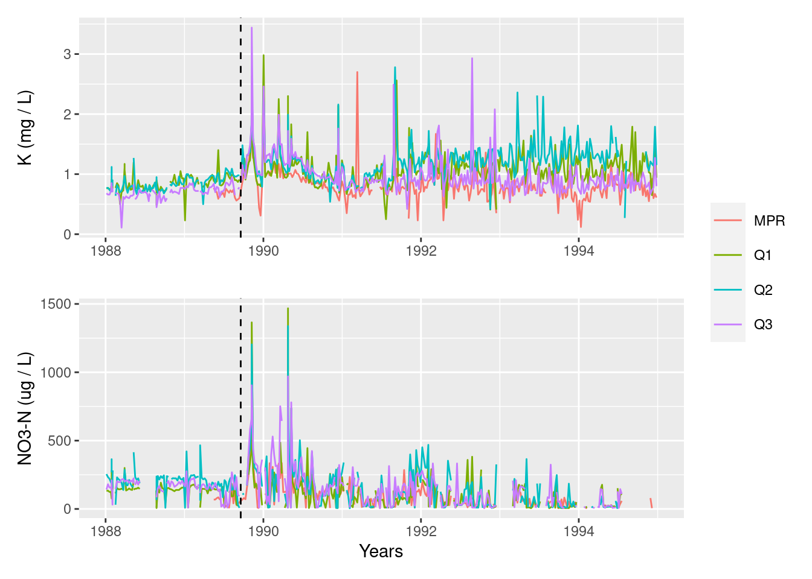
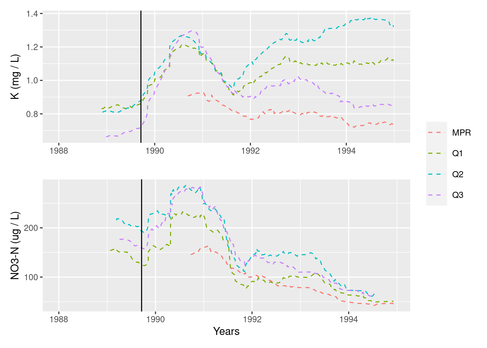

library(tidyverse)
library(janitor)
library(patchwork)
library(here)Plot replication
Recreating stream chemistry analysis in Luquillo Experimental Forest, Puerto Rico
Data Wrangling
#read in data from the four datasets and clean column names
prm_data <- read_csv("/courses/EDS214/group_project/got_git/got_git_data/RioMameyesPuenteRoto.csv") %>%
clean_names()
bq1_data <- read_csv("/courses/EDS214/group_project/got_git/got_git_data/QuebradaCuenca1-Bisley.csv") %>%
clean_names()
bq2_data <- read_csv("/courses/EDS214/group_project/got_git/got_git_data/QuebradaCuenca2-Bisley.csv") %>%
clean_names()
bq3_data <- read_csv("/courses/EDS214/group_project/got_git/got_git_data/QuebradaCuenca3-Bisley.csv") %>%
clean_names()#full join all the datasets into one big dataset (stacking dataframes)
all_sites_data <- full_join(prm_data, bq1_data) %>%
full_join(bq2_data) %>%
full_join(bq3_data) %>%
#selected only sample_data, no3, k, site to look at
select(sample_date, no3_n, k, sample_id)# filter data set to dates between 1988 and 1994 (dates analyzed in the paper)
all_sites_1988_to_1994 <- all_sites_data %>%
mutate(year = lubridate::year(sample_date)) %>%
filter(year %in% c(1988:1994)) Recreating plot (not rolling average)
# Plot NO3-N data, add vertical line at time of Hurricane Hugo (Sept 18, 1989)
no3_n_plot <- ggplot(data = all_sites_1988_to_1994, aes(x = sample_date, y = no3_n)) +
geom_line(aes(color = sample_id)) +
labs(x = "Years", y = "NO3-N (ug / L)") +
theme(legend.position = c(0.95,0.75),
legend.key.size = unit(1.5, "line"),
legend.title = element_blank()) +
geom_vline(xintercept = as.numeric(as.Date("1989-09-18")),linetype = "dashed")
# Plot K data, add vertical line at time of Hurricane Hugo (Sept 18, 1989)
k_plot <- ggplot(data = all_sites_1988_to_1994, aes(x = sample_date, y = k)) +
geom_line(aes(color = sample_id), show.legend = FALSE) +
labs(x = "", y = "K (mg / L)") +
geom_vline(xintercept = as.numeric(as.Date("1989-09-18")),linetype = "dashed")
# Stack the plots on top of each other (using patchwork package)
recreated_plot <- k_plot / no3_n_plot + plot_layout(guides = "collect")
recreated_plot
# Save plot
ggsave(filename = here::here("recreated_plot.jpg"),
plot = recreated_plot, width = 10 )Recreating plot using 9 week rolling average
# load tidyquant to use geom_ma()
library(tidyquant)# Plot moving average of nitrate over time, adding vertical line at Hurricane Hugo
no3_n_plot_ma <- all_sites_1988_to_1994 %>%
ggplot(aes(x = sample_date, y = no3_n)) +
geom_ma(ma_fun = SMA, n = 63, aes(color = sample_id)) +
labs(x = "Years", y = "NO3-N (ug / L)") +
theme(legend.position = c(0.95,0.75),
legend.key.size = unit(1.5, "line"),
legend.title = element_blank()) +
geom_vline(xintercept = as.numeric(as.Date("1989-09-18")),linetype = "solid")
# Plot moving average of potassium over time, adding vertical line at Hurricane Hugo
k_plot_ma <- ggplot(data = all_sites_1988_to_1994, aes(x = sample_date, y = k)) +
geom_ma(ma_fun = SMA, n = 63, aes(color = sample_id), show.legend = FALSE) +
labs(x = "", y = "K (mg / L)") +
geom_vline(xintercept = as.numeric(as.Date("1989-09-18")),linetype = "solid")
# Stack Plots
recreated_plot_ma <- k_plot_ma / no3_n_plot_ma + plot_layout(guides = "collect")
recreated_plot_ma
ggsave(filename = here::here("recreated_plot_ma.jpg"),
plot = recreated_plot_ma, width = 10 )